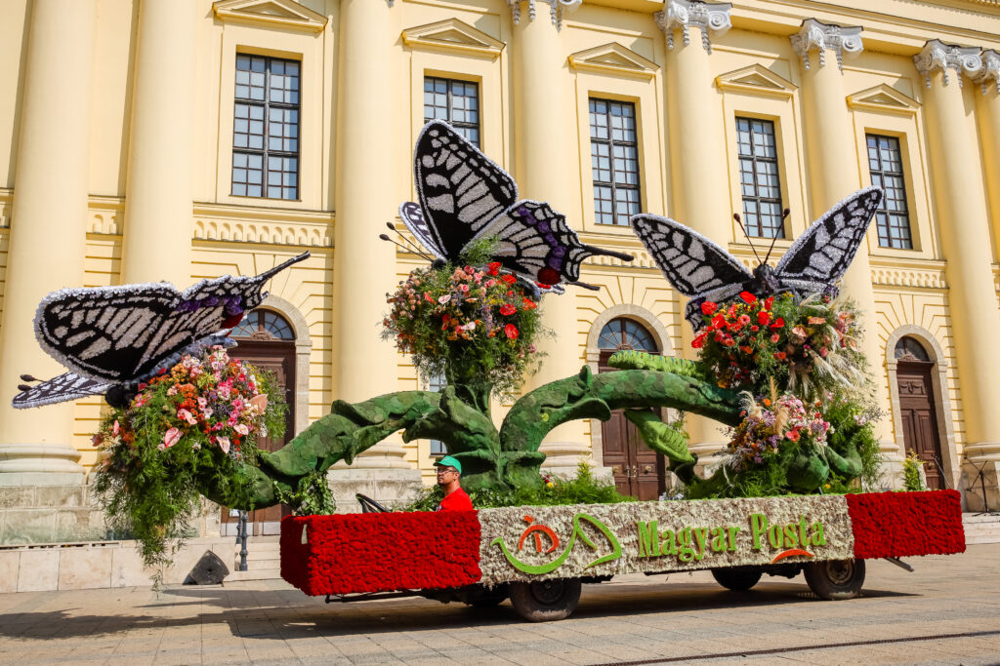
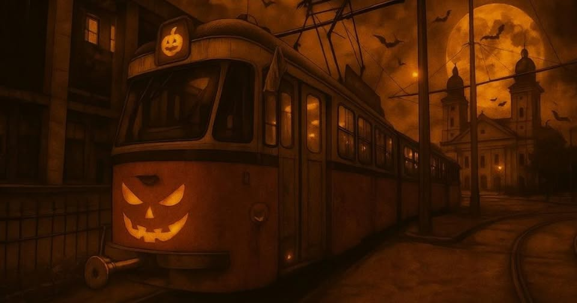

Tavaszi programok
Debrecen azon szerencsés városok egyike, ahol elérhető távolságban van a természet csendje. Domb- és hegyvidéket itt hiába keresünk, ám az erdős területekben gazdag város és környéke megannyi természeti csodát kínál. A történelmi belvárostól tíz percnyi távolságra található Nagyerdő, a várost északkeletről körbe ölelő Erdőspuszták vagy az Alföld legnagyobb egybefüggő erdőtömbje, a Gúthi-erdő nemcsak mesés természeti értékeket, de jelentős kultúrtörténeti emlékeket is rejt, így érdemes szabadidőnkben útnak indulni és felfedezni a környék látnivalóit! Ehhez adunk most néhány tippet, melyek kezdő és haladó túrázóknak, fiataloknak és idősebbeknek, kisgyermekes családoknak és baráti társaságoknak egyaránt tartalmas időtöltést kínál.
A Debreceni Egyetem Botanikus Kertje gyönyörű arcát mutatja tavasszal, amikor éledezik a természet és virágba borulnak a fák és bokrok. Aki most felkeresi a kertet, megcsodálhatja többek között a virágzó kökörcsint, a sáfrányt, a tavaszi tőzigét, a húsos somot, a pirosló és a télizöld hunyort és a táli jázmint, miközben madárfütty kíséretében tehet egy kellemes tavaszi sétát a szabadban. A füvészkert 200 éves múltra tekint vissza Debrecenben. A jelenlegi kert elődje a Déri Múzeum helyén – korabeli nevén Pap taván – létesített füvészkert volt, melynek területét 1807-ben jelölte ki Debrecen város akkori tanácsa. A kert a Református Kollégium felügyelete alatt állt és a természettudományos képzést szolgálta. Közben megalakult a Kollégiumban a tudományegyetem, mely épületének elkészültével a Nagyerdőbe költözik. Ezzel a Kollégium füvészkertje is elveszti jelentőségét, majd a Déri Múzeum felépültével megszűnik. Miután a tudományegyetem kivált a Kollégiumból, a botanikus kert céljára Debrecen város az egyetem mögötti 17 hektár területet adományozott a Nagyerdő területén. 1928-ban itt alapították meg az új füvészkertet, mely ma már a Debreceni Egyetem Botanikus Kertje néven várja a látogatókat. A létesítményben közel 6000 növényfajt tartanak nyilván. A kertben több mint 750 fásszárú fajt tartalmazó arborétum, benne a világon ma ismert négy cédrusfaj, különleges lágyszárú és trópusi gyűjtemények, valamint a Nyírség egyik legértékesebb növénytársulása, az úgynevezett gyöngyvirágos tölgyes nyújt különleges élményt. Messze földön híres a kert kaktusz- és pozsgás-gyűjteménye, mely mintegy 1300 kaktusz- és 1000 egyéb pozsgás fajával Kelet-Közép Európa egyik legnagyobbika.
Séta a Pallagi erdőben
A Debrecentől néhány kilométerre található Pallag Debrecen egyik külső városrésze. Az eredeti nevén Parlag nevű települést már a 13. század elején faluként emlegették egy írásos dokumentumban. A 16. században 30-40 telkes falu volt, majd a 17. század második felére elnéptelenedett és Debrecen városa vette zálogba. Az 1850-es évekig csapszék is állt itt. A Nagyerdőből indulva kellemes erdei sétán, jelzett túraútvonalon haladva gyalog egy óra alatt, kerékpáron bő félóra alatt érjük el a települést, amely ma a Balásházy Mezőgazdasági Szakközépiskoláról, a Debreceni Labdarúgó Akadémiáról és a Debreceni Nemzetközi Iskoláról ismert. A túra végén a helyi kocsma kerthelyiségében vagy a Pallag Spájz pékség teraszán érdemes megpihenni egy frissítő erejéig. Visszafelé vagy az erdőn keresztül ugyanazon az útvonalon vagy távolsági autóbusszal juthatunk vissza Debrecenbe.
Túra az Erdőspusztákon
Az Erdőspuszták Debrecentől mintegy tíz kilométerre, keletre, félkörívben húzódnak. Népszerű kirándulóhely, kerékpáros- és gyalogtúra központ, ahol mesés erdei túraútvonalak, fák lomkoronájába nyúló kilátók, csillogó vizű tavak, változatos növény- és állatvilág és gyönyörű természeti környezet várja a kirándulókat. Az egykori nagy kiterjedésű gyöngyvirágos tölgyesek kisebb-nagyobb foltokban találhatók meg. A térség gazdag madárvilága lenyűgöző, de gyakori ezen a vidéken a vaddisznó, az őz, a nyúl és a róka egyaránt. Jó illatú fenyvesek váltakoznak ligetes erdőfoltokkal és mezei virágokkal tarkított rétekkel. Kora tavasztól késő őszig számos botanikai élménnyel térhet innen haza a kiránduló.
Az Erdőspuszták közkedvelt turisztikai attrakciója a 2025-ben 143-ik életévét betöltő „Zsuzsi”, Magyarország legrégebbi keskeny nyomtávú erdei vasútja, ami 1882-es megnyitása óta járja a Debrecen környéki Erdőspuszták festői szépségű tájait. Nyomvonalán kerékpárút és erdei túraútvonalak is haladnak, így akár gyalog vagy két keréken is útnak indulhatunk, hogy felfedezzük a környék csodálatos élővilágát. Útközben érdemes megállni a kisvasút Csereerdő megállóhelyénél és barangolni a környéken, ahol a természeti csodák mellett ókori emlékekre is bukkanhatunk, de a Zsuzsi-vonat végállomásánál, Hármashegyalján is számos természeti és épített attrakció vár bennünket.
| A város címere: | |
|---|---|
 |
|
Nyári programok
| Virágkarnevál |  |
|---|
| Hivatalos weboldal |
Debrecziner Gourmet Fesztivál
Az ország legkiválóbb éttermei és séfjei gyűlnek össze Debrecenben, hogy megmutassák, milyen magaslatokban tart most a gasztronómia csúcsa Magyarországon.A Stílusos Vidéki Éttermiség és Debrecen legjobb éttermei mellett vendégkiállítóként sztárséfek is bemutatkoznak. Legyen szó akár fine dining éttermekről, bisztrókról vagy food truckokról, biztosak lehetünk benne, hogy folyamatosan új utakat keresve, merészen fűszerezett kreativitással készítik el fogásaikat.A háromnapos találkozó látogatóit az ínycsiklandó falatok, az izgalmas textúrák és a különleges alapanyag-párosítások mellett fantasztikus desszertek, kézműves sörök, minőségi borok és formabontó koktélok várják.
A 2018-ban alapított Debrecziner Gourmet-díjat ezúttal is a közönség szavazatai alapján viheti majd haza a legjobb kiállító.
Virágkarnevál
A Debreceni Virágkarnevál hazánk egyik legnagyobb és egyben legnépszerűbb kulturális rendezvénye, amely 2016-ban ünnepelte 50. születésnapját. A rendezvény központi eleme az augusztus 20-i karneváli felvonulás, amin a több százezer szál élő virág felhasználásával készített, közel 5 méter magas és 12 méter hosszú virágkompozíciók hazai és külföldi táncosok, hagyományőrző csoportok kíséretében végig haladnak Debrecen utcáin. Mára azonban a debreceni Virágkarnevál Karneváli Hétté nőtte ki magát, amikor a város számos pontján várják a városba látogatókat különböző gyerekprogramok, koncertek, színházi előadások.
Debreceni bor és jazznapok
A Nagyerdő szívében megrendezett eseményre várják az ország minden tájáról érkező borbarátokat és jazzkedvelőket a Békás-tó partjára, ahol a fesztivált nappal a zöld természet öleli körbe, éjjel pedig a varázslatos fényerdő lombjai, igéző víztükre uralja a látképet. A legkiválóbb hazai jazz zenészek nívós koncertjei mellett a legizgalmasabb magyar borokat kóstolhatják meg az esemény látogatói a Nagyerdei Park nyújtotta hangulatos környezetben.
3x3 kosárlabda
Augusztus végén ad otthont a Kossuth tér ennek a világszintű sporteseménynek, hiszen a férfi és női mezőny pénzdíjas versenyeit követően a világ legjobb 18 év alatti válogatottjai is összemérik erejüket, 2015 óta összesen húsz, három a három elleni verseny volt a Kossuth téren, amely a rendező városokat tekintve a legtöbb.

Őszi programok
Halloween
Halloween közeledtével Debrecen idén is megtelik szellemes és szórakoztató programokkal. A város számos helyszínén várják a jelmezes gyerekeket és felnőtteket, akik részt vehetnek csokigyűjtő kalandokon, izgalmas játékokon, és persze szellemes bulikon is.
Utcafesztivál
A Batthyány utca megtelik zenével, nevetéssel és persze egy kis borzongással is. A vendéglátóhelyek különleges, tematikus kínálattal készülnek, az üzletek pedig szellemes díszbe öltöznek. Az utcában működő intézmények sem maradnak ki a mókából, hiszen édességgyűjtéssel, játékokkal és meglepetésekkel várják a jelmezbe öltözött gyerekeket és fiatalokat.
Nagyséta a menhelyen
Az Együtt az Állatokért Egyesület negyedik alkalommal rendezi meg tematikus őszi sétáját. A látogatók október 25-én, szombaton 14 órától nemcsak a kutyusokat sétáltathatják meg, hanem vásárral, menhelylátogatással és nyitott macskaházzal is készülnek a szervezők.
Vidámpark
Különleges halloweeni estére készül a Debreceni Vidámpark október 31-én, pénteken 16 órától, ahol a látogatók éjszakai kalandokon keresztül vehetnek részt a kivilágított játékokon, Halloween-csemegéket kóstolhatnak, az arcfestés mellett pedig belebújhatnak a jelmez-forgatagba, ahol egész estére szóló szórakozás vár mindenkit.
| A rettegés járata | |
|---|---|
|  | |
Téli programok
| Debreceni advent |  |
|---|
| Hivatalos weboldal |
Debreceni Advent
A karácsonyi vásár széles termékkínálattal, minőségi gasztrokulináris palettával, koncertekkel, gyerekfoglalkozásokkal, mesevárossal, karácsonyi hüttével és jégpályával várja az ünnepi lázban égő közönséget az adventi időszakban. A belvárosi korzón a karácsonyi ajándékok beszerzése közben forralt bort és sült gesztenyét is kóstolhatunk. A vásárban kapható tradicionális és hagyományos termékek között válogatva, a felállított hatalmas karácsonyfa alatt, a 75 ünnepi hangulatú stand között, az ünnepi fényben sétálva, gyerekeknek és felnőtteknek is garantált a karácsonyi hangulat!
Jégvirágkarnevál
2025-ben először varázslatos, mesébe illő hangulattal borította be Debrecent. Megcsillant a jég, felcsendült a zene, és a karácsony illata szállt a levegőben. Egy nap, amikor a hópelyhek is táncra perdültek, a fúvószenék és a gyermeknevetés összekeveredtek a kürtőskalács illatával, és minden pillanat egy kicsit visszahozta a gyerekkori csodát. Jégbe zárt történetek, fénybe öltözött táncok és zúzmarás meglepetések várták mindazokat, akik hisznek abban, hogy a télben ott lapul a varázslat.